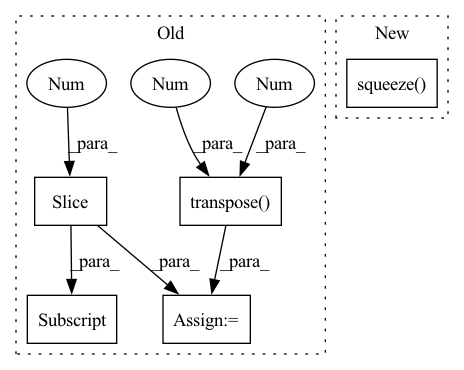

Pattern ID :1930

Before Change
self.head = SVDHead(args=args)
def forward(self, src, tgt, T_gt=None, prefix="train"):
feat1 = src[..., :3].transpose(1, 2)
feat2 = tgt[..., :3].transpose(1, 2)
src = src[..., :3]
tgt = tgt[..., :3]
src_embedding = self.emb_nn(feat1)
tgt_embedding = self.emb_nn(feat2)
src_embedding_p, tgt_embedding_p = self.pointer(src_embedding, tgt_embedding)
src_embedding = src_embedding + src_embedding_p
tgt_embedding = tgt_embedding + tgt_embedding_p
scores = torch.matmul(src_embedding.transpose(2, 1).contiguous(), tgt_embedding) / math.sqrt(self.emb_dims)
scores = torch.softmax(scores, dim=2)
// b x points x points
feat1_corr = torch.matmul(feat2, scores.transpose(2, 1).contiguous())
rotation_ab, translation_ab = self.head(feat1, feat1_corr)
After Change
else:
rotation_ba = rotation_ab.transpose(2, 1).contiguous()
translation_ba = -torch.matmul(rotation_ba, translation_ab.unsqueeze(2)).squeeze(2)
T_12 = rt_to_transformation(rotation_ab, translation_ab.unsqueeze(2))
if T_gt == None:
In pattern: SUPERPATTERN
Frequency: 3
Non-data size: 5
Instances
Fragment ID: 8592195
Project Name: paul007pl/mvp_benchmark
Commit Name: cb5622fec6ad947b57a83033563a402533978c61
Time: 2021-07-12
Author: panliang_de2007@qq.com
File Name: registration/models/dcp.py
M Class Name: Model
N Class Name: Model
M Method Name: forward(5)
N Method Name: forward(5)
M Parent Class: nn.Module
N Parent Class: nn.Module
M File Name: registration/models/dcp.py
N File Name: registration/models/dcp.py
M Start Line: 270
M End Line: 294
N Start Line: 394
N End Line: 425
'>
Before Change
src_idx = self._get_src_permutation_idx(indices)
target_classes = torch.full(src_logits.shape[:2], 0, dtype=torch.int64, device=src_logits.device)
target_classes[src_idx] = 1
loss_ce = F.cross_entropy(src_logits.transpose(1, 2), target_classes, weight=self.cls_weights.cuda(), label_smoothing=0.0)
return loss_ce
After Change
// Remove non existent classes
valid_ids = (cls_labels != -1).nonzero()
loss_ce = F.binary_cross_entropy_with_logits(cls_preds[valid_ids].squeeze(), cls_labels[valid_ids].squeeze())
return loss_ce
def loss_bboxes(self, outputs, targets, matches, num_boxes, matches_per_class=1):
'>
Fragment ID: 8592201
Project Name: bwittmann/transoar
Commit Name: 09f57bf9bd1146b57db0cce80a0901defe5e5d63
Time: 2022-02-15
Author: bastian.wittmann@tum.de
File Name: transoar/models/criterion.py
M Class Name: TransoarCriterion
N Class Name: TransoarCriterion
M Method Name: loss_class(3)
N Method Name: loss_class(3)
M Parent Class: nn.Module
N Parent Class: nn.Module
M File Name: transoar/models/criterion.py
N File Name: transoar/models/criterion.py
M Start Line: 40
M End Line: 47
N Start Line: 41
N End Line: 47
'>
Before Change
idx = self._get_src_permutation_idx(indices)
target_classes_o = torch.cat([t["labels"][J] for t, (_, J) in zip(targets, indices)])
target_classes = torch.full(src_logits.shape[:2], 0,
dtype=torch.int64, device=src_logits.device)
target_classes[idx] = target_classes_o
loss_ce = F.cross_entropy(src_logits.transpose(1, 2), target_classes, self.cls_weights.to(device=src_logits.device))
return loss_ce
After Change
// Remove non existent classes
valid_ids = (soft_labels.flatten() != -1).nonzero()
loss_ce = F.binary_cross_entropy_with_logits(cls_preds[valid_ids].squeeze(), cls_labels[valid_ids].squeeze().cuda())
return loss_ce
'>
Fragment ID: 8592207
Project Name: bwittmann/transoar
Commit Name: 50cc4661dc99397fe437a829cff6659bfd58eaba
Time: 2022-04-19
Author: bastian.wittmann@tum.de
File Name: transoar/models/criterion.py
M Class Name: TransoarCriterion
N Class Name: TransoarCriterion
M Method Name: loss_class(4)
N Method Name: loss_class(4)
M Parent Class: nn.Module
N Parent Class: nn.Module
M File Name: transoar/models/criterion.py
N File Name: transoar/models/criterion.py
M Start Line: 45
M End Line: 54
N Start Line: 42
N End Line: 48